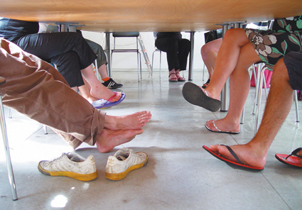
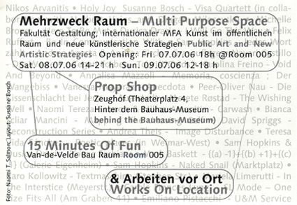

"Mehrzweck Raum - Multi Purpose Space, 2006. Fakultät Gestaltung MFA Kunst im öffentlichen Raum und neue künstlerische Strategien / MFA Art in Public space and new artistic strategies   Opening: 07.07.06 18.00 @Room 005 Sat. 08.07.06 14.00-21.00 Sun. 09.07.06 12.00 - 18.00 "Prop Shop" Andrea Acosta & Andrea Sirch - Grasouflage Nayari Castillo - Die Worte Tegan Forbes - Tourist Cards Karolina Freino - Void And Beyond Annalisa Mazzoli - Memoria, coscienza ; Der Wangebiss Vanessa Mayoraz - Anecdota Peer-Oliver Nau - Die Kissenschlacht bei Jena - Auerstedt Merete Røstad - The Wishing Well Naomi Tereza Salmon, Nikos Arvanitis - Carwash David Spriggs - Reconstruction Series Andrea Theis - Image Disturbance Theresa Vida Sánchez - Poetic places in Weimar-West Sam Hopkins & Dusica Drazic - Young Serbians "15 Minutes Of Fun", Van-de-Velde Bau Raum 005 Nikos Arvanitis - Holy Joy Susanne Bosch - Visa Quartett (in collaboration with Norbert Heins and Dragan Milosevski) Michelle Brown - Here To Be Met Dusica Drazic - I Will Go This Way Karo Kollwitz - Textmachine Emiliano Pistacchi U&M Service Felix Rufert - Be In Communication With Sam Hopkins - Jedes Wort Zählt & Works On Location Mark Baskett - {(a) -1}+{(b) +1}+{(c) -1} - Galerie Eigenheim Sam Hopkins - Naked Snail - Herderplatz Karo Kollwitz - Textmaschine - Steuben Str. Mariela Limerutti - In The Interstice - Meyerstr. Carole Frances Lung - SL Mode - One Size Fits All - Am Graben 41 Emiliano Pistacchi U&M Service Close Window All content copyright 2006 Naomi Tereza Salmon - all rights reserved |